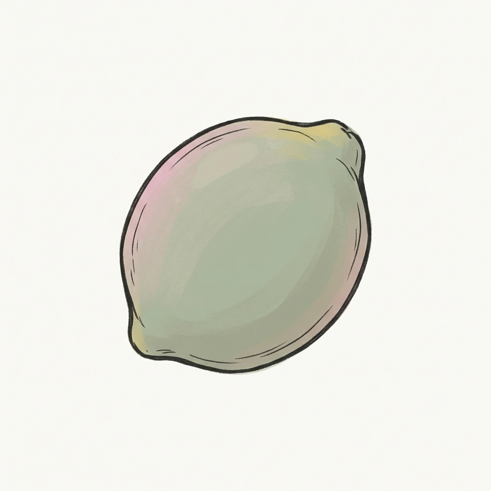
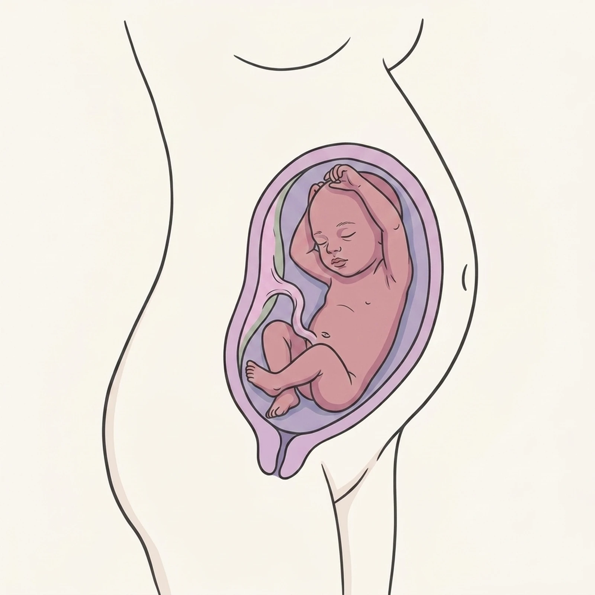
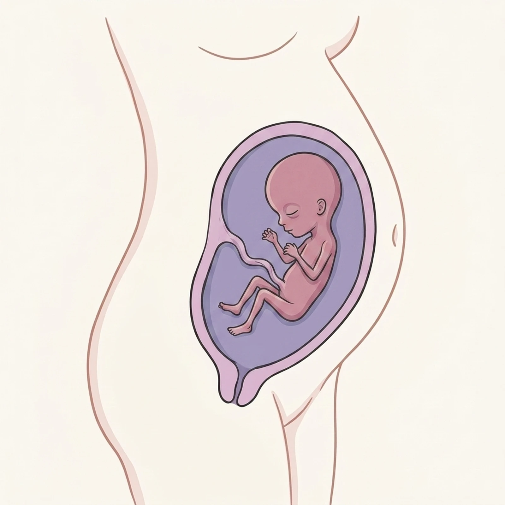
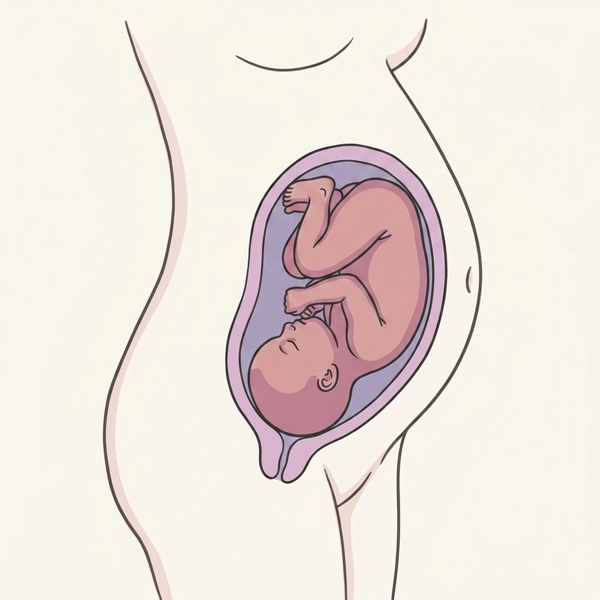

Birth Plan
Week by Week
Find a Doula
Courses
Get the App
Free · Built with doulas
Build your joyful birth plan — and grow through every week
The week-by-week app that pairs your plan with real birth support — costs, hospitals, and doulas in your city, written by people who attend births for a living. Start with your due date or browse your city's guide.
Get the free app
See the walkthrough

✦ 187 city guides✦ Doula-written content✦ Medicaid-friendly✦ Free forever
What's inside
Everything you need, nothing you don't
Three things carry the app: your plan, your weeks, and your people. Each one gets its own space — and its own artwork from the week series.

Birth plan, built in 20 minutes
A doula-crafted template walks you through every preference — pain management, support people, newborn care — and turns it into a one-page plan your care team actually reads.

Your weeks, illustrated
Every week from 4 to 40 gets a custom watercolor and plain-language guidance on your body, your baby, and what's worth asking your provider this month.

Real support, near you
Search doulas, midwives, and lactation consultants by city, service, and budget — with Medicaid-accepting providers flagged clearly, never buried.
Find your week, starting today
The journey, week by week
When is your baby due?
September 22, 2026
Show my week →
This week at a glance
Week 28
Third trimester begins. Baby's eyes open and lungs practice breathing — your body starts gearing up too.
14
18
22
26
28
32
36
40
Weeks 4–13

Weeks 14–27
Weeks 28–36

Weeks 37–40
Birth support in your city
Birth support in your city
Local guides for the cities we know best — real costs, real hospitals, real providers. 187 cities and counting.

Austin, TX
8 doulas listed · $1,000–3,000 typical
D
Denver, CO
12 doulas listed · $1,200–3,500 typical
N
Nashville, TN
6 doulas listed · $900–2,400 typical
Keep Learning
Guides for every step of the way
Deep, doula-written guides on every part of the journey — the reading list behind the app.

Breathing rhythms for labor
Four breathing patterns from the app's labor course — slow breaths for early labor, surge breathing for active labor, and the transition set that gets you to pushing. Illustrated step by step in the app.
Preview the labor course
Birth Plan Template
Free template built by a doula. Download and fill it out.
What Is a Doula
What doulas do, how they help, and why families hire one.
Doula Cost Guide
What doulas cost, what's included, and insurance coverage.
Medicaid Doula Coverage
Which states cover doula services and how to access benefits.
"We came for the birth plan. We stayed because every week, something in the app grew right along with our baby."
— Austin mom, week 34
Your joyful birth plan starts tonight
Free, doula-crafted, about 20 minutes. Then every week after, the app grows with you — week by week, leaf by leaf.
Get the free app
See the walkthrough

Judgment-free birth support · Built with doulas